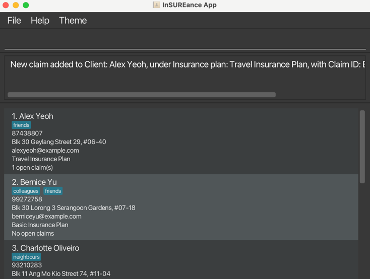
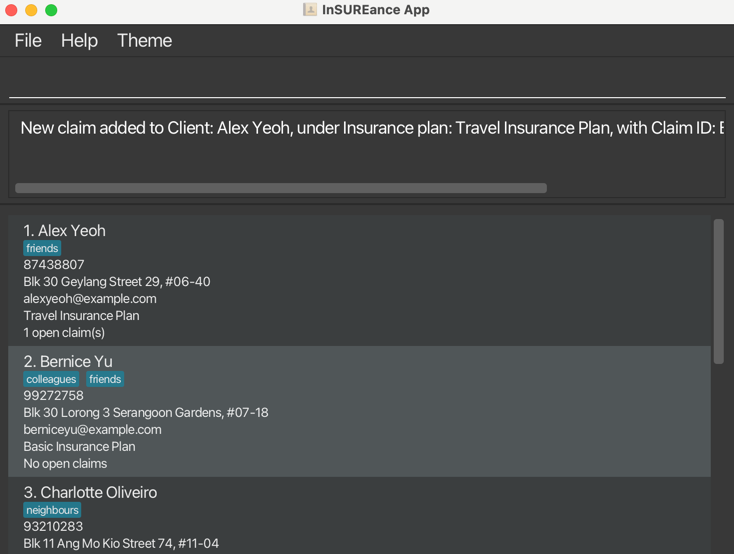
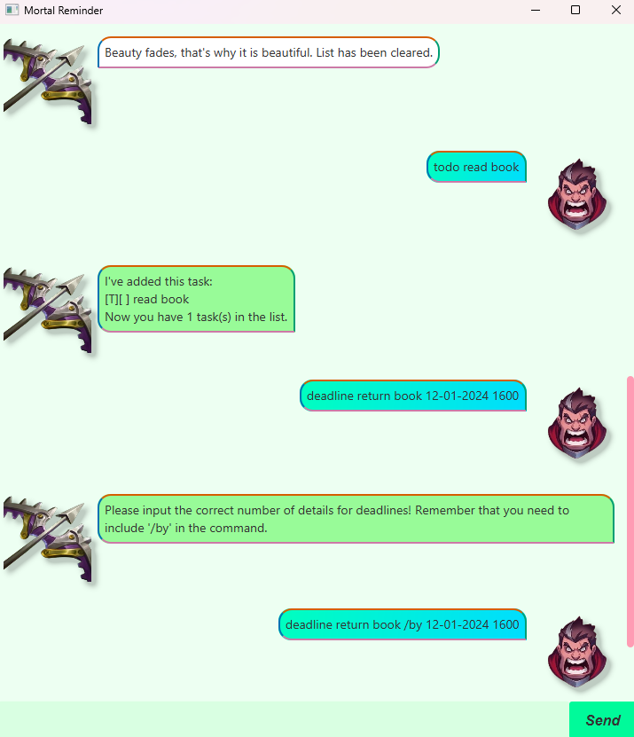
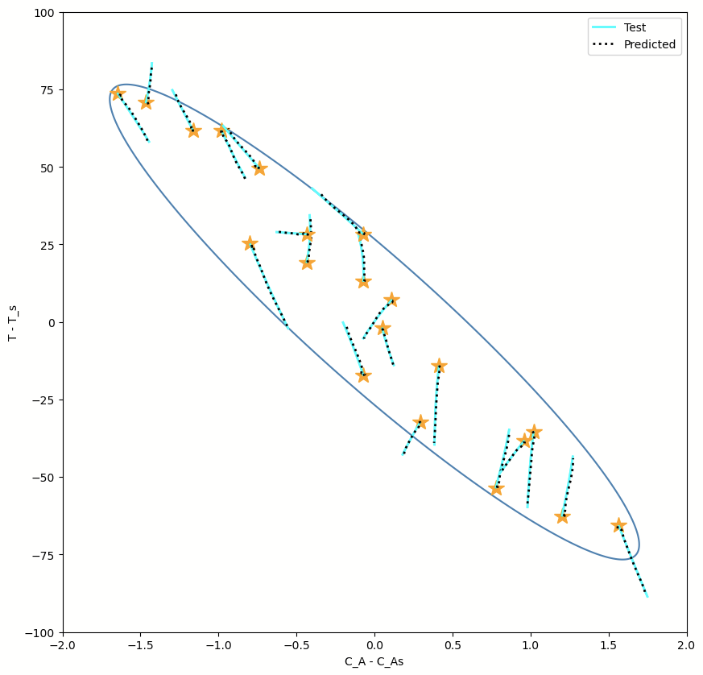
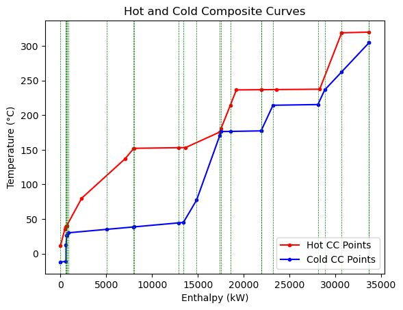

In this project, I designed a Virtual Reality environment using Unity and OpenXR to teach students about the operation of an industrial filter commonly used in chemical engineering industries.
The aim was to bridge theoretical knowledge learnt in classroom to practical understanding about the operation using the VR environment. Unfortunately, as this project was done using school resources,
I am unable to make the code public and thus, the links for this project redirects to the demonstrative video instead.
 

This was one of my first brownfield projects and I worked with a team of 3 other students to create this app. The app's name is InSUREance and it is a desktop app for managing clients,
optimized for use via a Command Line Interface (CLI) while still having the benefits of a Graphical User Interface (GUI). If you can type fast, InSUREance can get your client management
tasks done faster than traditional GUI apps.

I designed a concept for a game that adapts to players' strategies by learning their habits and quirks through past inputs. The goal is to maintain a state of "flow," where the challenge dynamically
matches the player's expertise, ensuring consistent engagement and a sense of accomplishment. This approach creates a unique experience tailored to each player, offering challenges that feel personalized and rewarding.

In this greenfield project, a reminder app called Mortal Reminder was created using Java and JavaFX to help manage todos, deadlines and upcoming events. The app can also evolve with great flexibility
to allow users to customise the experience towards their preferences. An example is customising the command codes to their liking so that the app is easier for them to use.

I am currently working on this project. I have managed to create a conventional neural network to predict non-linear continuous stirred tank reactor (CSTR) operations. I am currently in the midst of
working on a Graphical Neural Network (GNN) to map the relationships between state variables and manipulated variables in a 3 unit operation consisting of 2 CSTRs and 1 separator in series. Unfortunately,
as the project is under progress, the repository is private and thus, the links to this project redirects back to this page.

This project contains software specifically created to automate a long algorithmic costing process required for a chemical engineering project I had to do in school. In pinch analysis, to select the best
minimum temperature difference for a network of heat exchangers, a long iterative calculation involving sectioning of network, calculation of minimum number of units through stream matching, calculation of
utility and capital costs is required for every possible temperature difference before comparison to find the global minimum annualised cost. This piece of software trivialises this process as long as the
plot data of the balanced composite curve is available.